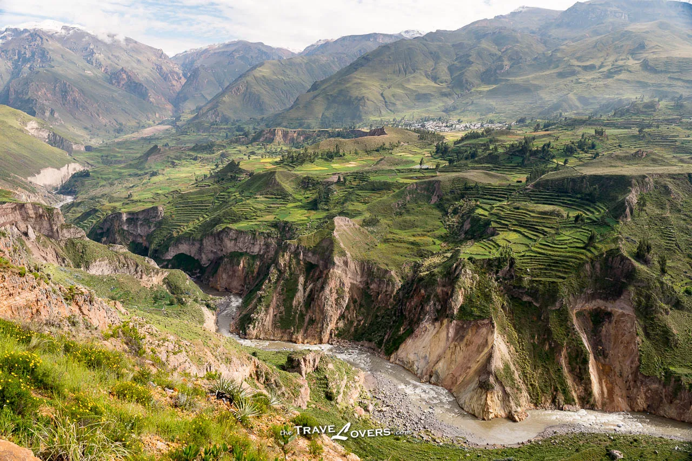

科爾卡谷
科爾卡峽谷（Colca Canyon）是秘魯南部安地斯山脈科爾卡河的一個峽谷，位於阿雷基帕西北部約160公里（99英里）。深度約為1000-2000米，它是世界上
最深的峽谷之一，它的長度約為70公里（43英里）。
峽谷現今依舊有印加帝國建立前就已定居的居民，以及西班牙殖民時代建立的城鎮。
科爾卡峽谷是秘魯訪問量第三大的旅遊目的地，每年約有120,000名遊客來此旅遊。
科爾卡峽谷（Colca Canyon）是秘魯南部安地斯山脈科爾卡河的一個峽谷，位於阿雷基帕西北部約160公里（99英里）。深度約為1000-2000米，它是世界上
最深的峽谷之一，它的長度約為70公里（43英里）。
峽谷現今依舊有印加帝國建立前就已定居的居民，以及西班牙殖民時代建立的城鎮。
科爾卡峽谷是秘魯訪問量第三大的旅遊目的地，每年約有120,000名遊客來此旅遊。